Plan and track tasks
Create a task with a name, a type and a date, add a description, and set it to repeat daily. Subjects and groups get their own color and details.
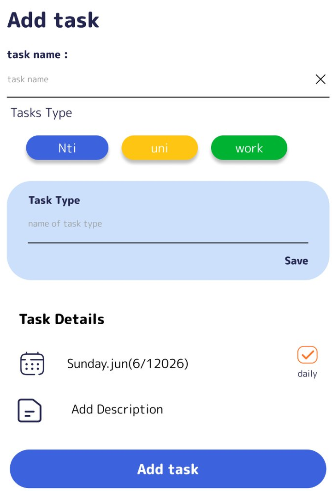
A UI/UX design project · High-fidelity Figma prototype
Study Go helps university students organize their study schedules, track progress, and stay motivated.
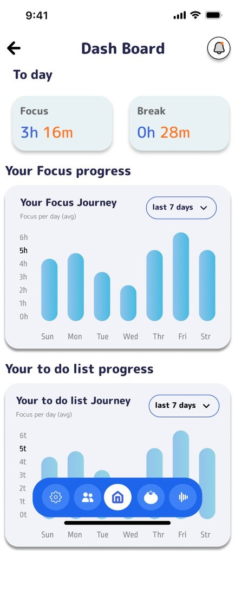
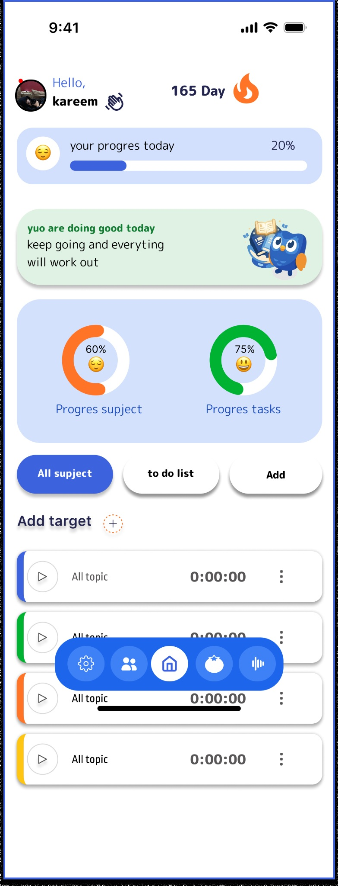

The problem
Difficulty organizing tasks and schedules.
Add tasks with a type, date and description, and follow the to-do progress. See how
Study time without a clear structure.
Start a timed session tied to a task, with white noise and music controls. See how
Hard to stay consistent and see progress.
Progress rings and charts, a day streak, and a ranking among friends. See how
Key features
Create a task with a name, a type and a date, add a description, and set it to repeat daily. Subjects and groups get their own color and details.

Choose how many hours you want to study each day. Your target stays visible on the home screen throughout the day, so you can keep your goal in sight, check your progress, and stay motivated to reach it.
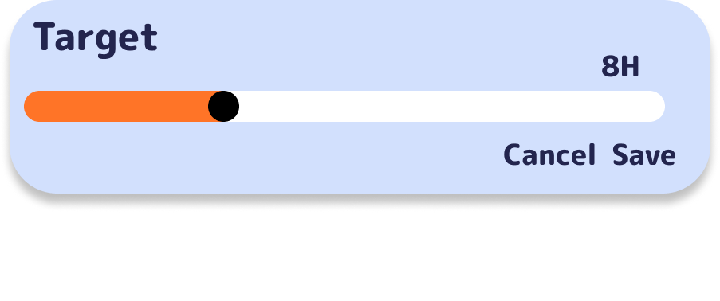
The dashboard shows today's focus and break time, with 7-day charts for focus and to-do progress.
Tomato Go pairs a timer with the task you are studying, plus white noise and music controls. A focus note can be added during a session.
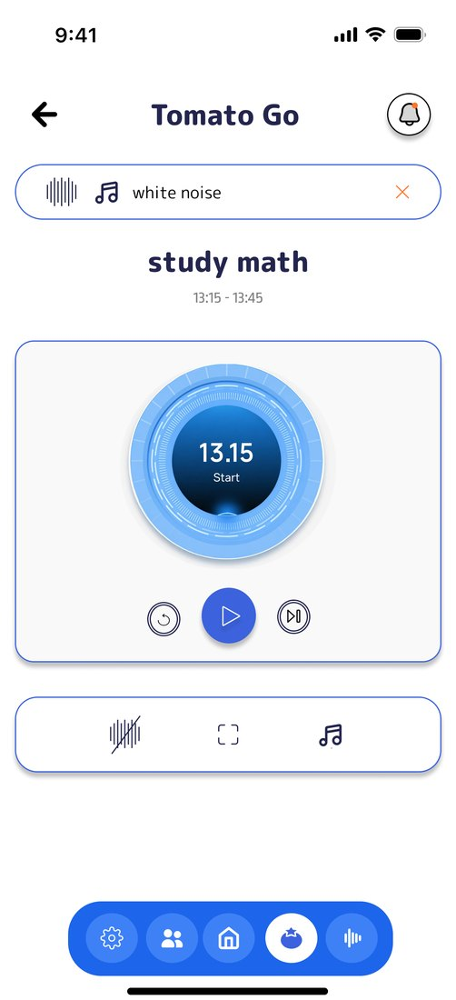
Pick a white-noise sound like rain, cafe, forest or sea to help you concentrate. In Focus Setting, choose which apps to block during a session so distractions stay out of reach.
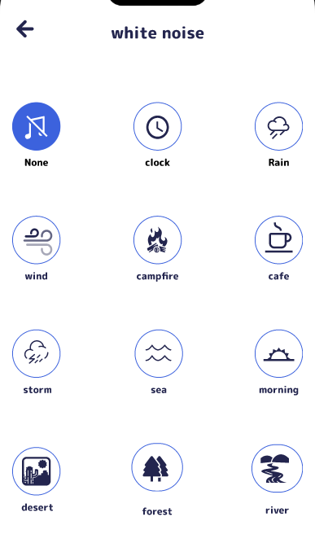
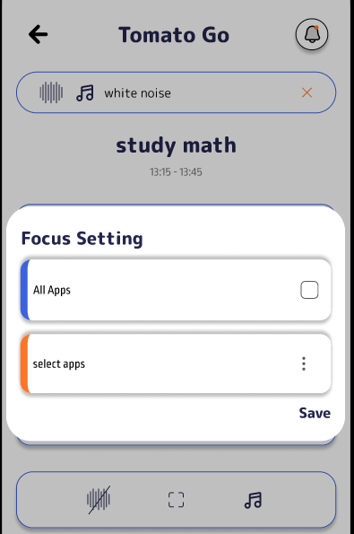
A daily streak rewards consistency, with clear streak rules. A ranking compares total study time among friends.
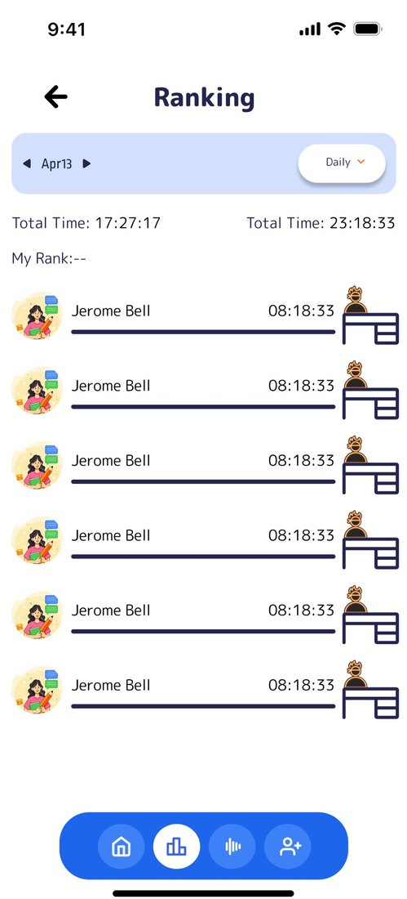
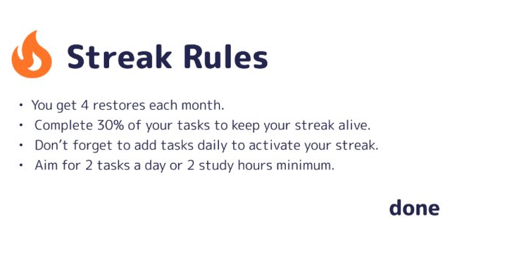
Join study groups, manage friends, and use the in-app chat assistant with quick reply suggestions.
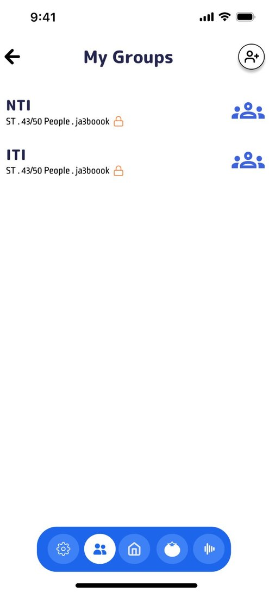
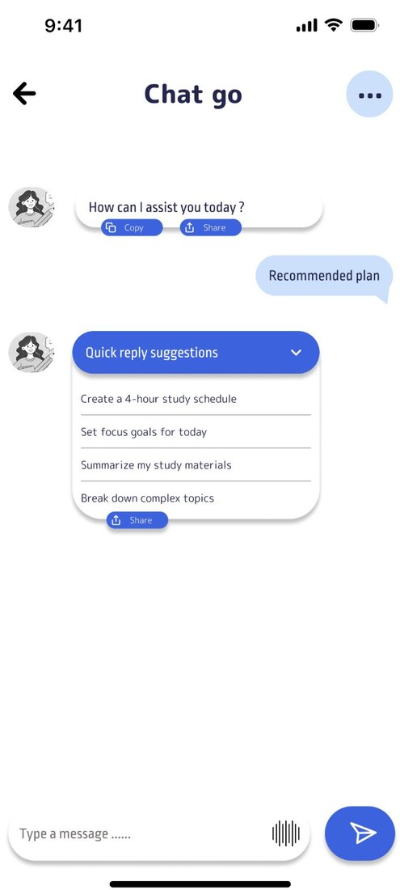
Explore the app
Design process
Students can struggle with organization, distraction and consistency.
Onboarding and sign-up lead to a home screen. Dashboard, focus timer, rankings, friends, groups and chat sit behind a floating bottom navigation.
One blue primary, pill-shaped buttons, color-coded subjects and tasks, progress rings and bar charts, and a flame icon for the streak.
A high-fidelity Figma prototype of 15+ screens, with a design system covering typography, color palette, component library and layout grids.
A solo UI/UX project by Kareem Hawash · 2025–2026. Study Go is a design concept and prototype, not a released app.
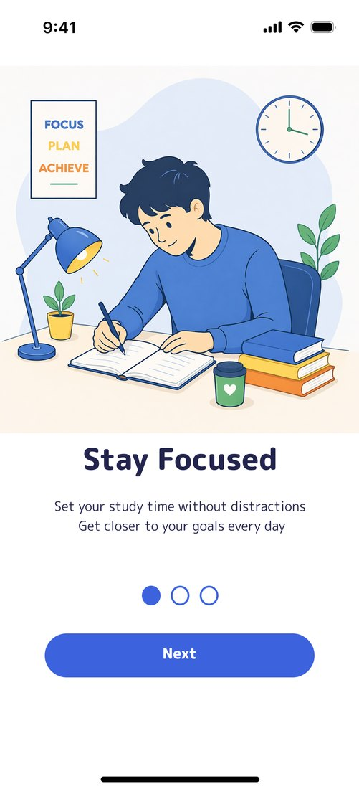